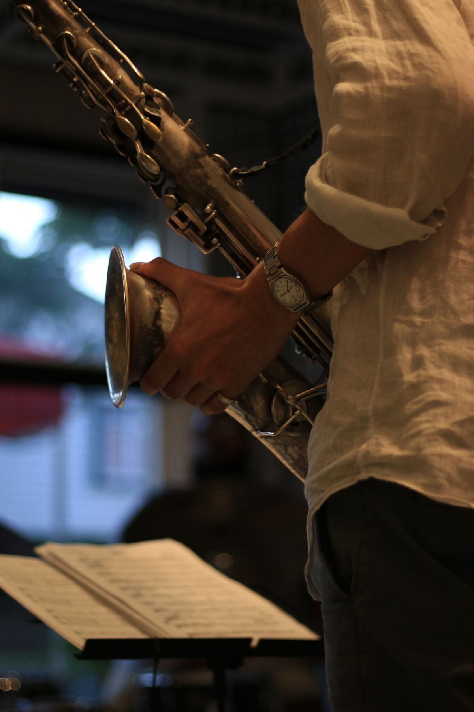

Welkom bij Muziekschool H&J
Muziekschool voor gitaristen, koperblazers en saxofonisten
Zou het niet leuk zijn als je een gitaar, saxofoon, trompet of ander blaasinstrument zou kunnen bespelen? Dat vergt niet alleen veel oefening, maar ook de juiste hulp en ondersteuning. Hans en Jesse, de muzikanten achter deze muziekschool, kunnen jou die ondersteuning bieden. Ze zijn beiden afgestudeerd aan het conservatorium en hebben veel ervaring met het geven van muziekles.
De lessen worden gegeven in een prachtig en functioneel pand, waarin je ongestoord kunt oefenen, zowel individueel als in groepsverband.
Specialisatie
Muziekschool H&J is gespecialiseerd in gitaar- en jazzmuziek.
Veel muziekscholen richten zich op klassieke muziek. Bij Hans & Jesse kun je echter ook les krijgen in jazzmuziek. Zoals je misschien weet, zijn koperblazers en saxofonisten een zeer belangrijk onderdeel bij jazz. Hans en Jesse zijn grote jazzliefhebbers en hebben zich hierin gespecialiseerd.
Op deze website vind je veel informatie over wat deze muziekschool te bieden heeft, maar je kunt natuurlijk altijd vrijblijvend langskomen voor meer informatie.